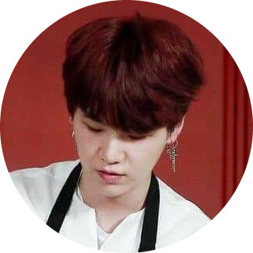
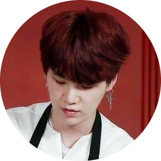

FORE CRESS üçÉ
BY
ANNEY
In love of nature
The Fore Cress is a company of nature with multiple services like restaurant, spa, Hotel. The whole business is located in a dense botanical forest. Our business provides relaxation to our customer in order to make them bond with nature from the best of operations on melbourne.The customers in our venue are nature lovers in the breathtaking botanical forest and the delicious dishes. It can take around 2 hours minimum to complete the forest/garden tour. We have native plants, endangered plants, flowers, impressive huge trees(some of them can bear fruits). Also, the trees and plants are decorated in a certain shapes which makes our botanical forest a great attraction. It's not only the surroundings beauty you get served here it also serves you great breakfast lunch and sesonal 9-course dinner. Our place may sound expensive but it's not that expensive and not that cheap too. Fore cress is also known to public for it's spa seervice which is outdoor in open yet private area with professional spa therapists. The spa services include- massages, body trestments, facial, waxing, manicure, pedicure. All the customer describe the fore cress price as value is it's price.
Our Mission
Our Values
Our Vision
The venue is massive on it's own that you may get lost in it but do not worry the place has map stands and directions. We also provide you a paper map to make your tour interesting. We care about our customer and have createda igloos in paths so that you can take a rest too. Despite of a huge venue you will not lack staff in any corner. You can find a button in many parts of the venue when you press it it send a ring to the customer service desk and you can communicate with our staff whenever you need to.
 |
The picture shows a tree house which is actually the Fore cress Kitchen built in tree where all the dishes are made.The concept of Fore cress is nature and in order to keep it natural the developers of Forecress came up with the idea of having a tree house commercial kitchen. The only difference between the other commercial kitchen and Fore cress kitchen is that it is made up of wood. It runs normally like any normal kitchen would operate. |
 

The photos shown are head chef, Jin and the sous chef, Suga who are committed to the Forecress. They are famous for their cooking skills and have reached over 30M followers on the most used app instagram.
The dishes served in Fore cress created by these two chefs. The dishes are unique both in presentation and tatse. Some of the dishes are very interesting and might be new to the customers.We have two menus for the day and night. The first menu is available on the breakfast and lunch time whereas the second one is available during night time. The first menu Consists of A la carte menu and is named "Oriana". and on the other hand the menu served during night time is named "Callisto"
The Fore Cress acomplishments
The Forecress listed the key events, milestones and occurrences in their history.
| Year | Achieved |
|---|---|
| 2016 |
|
| 2017 |
|
| 2018 |
|
| 2019 |
|
Annual events occured in The Fore cress and ratings
|
|
Our kind and loyal customers are the reason today we are able to stand strong with the name Fore cress and for that we are thankful to them. We have achieved more than 10K loyal customers in these past 7 years. If you are impressed by our services and want to connect with us you are always welcome to join the membership. With the membership you can have discounts on certain times and be the first one to get our business news.